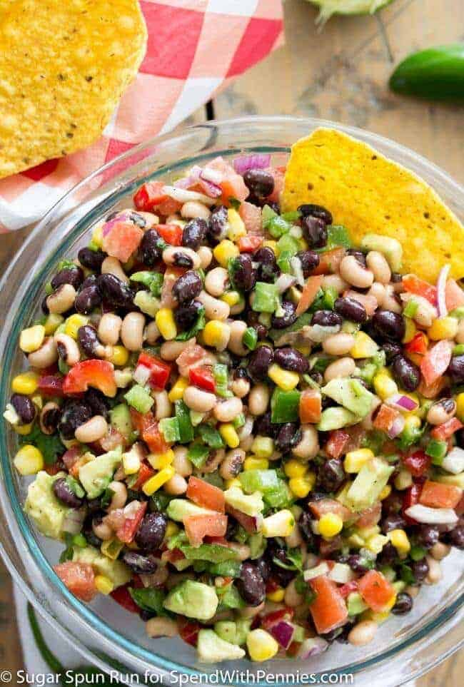

Description
This delectable and healthy dish is perfect for the summer.
Combining a variety of vegetables, olive oil,lemon juice, and spices, it's sure to have you coming back for more.
Perfect with tortilla chips or in a wrap. Add your own spin to it! The possibilities are endless!
Ingredients
- 3 Roma tomatoes seeds removed, diced
- 2 Avocados diced
- 1/3 Cup diced red onion
- 15 Ounces canned black beans1 can, rinsed and drained
- 1 1/2 Cups forzen corn kernels thawed
- 1 Bell pepper diced, any color
- 1 Jalapeno seeds removed, finely diced
- 1/3 Cup chopped fresh cilantro
- Tortilla chips for serving
Dressing
- 1/3 Cup olive oil
- 2 Tablespoons fresh lime juice
- 2 Tablespoons red wine vinegar
- 1 Teaspoon granulated sugar
- 1/2 Teaspoon salt
- 1/2 Teaspoon black pepper
- 1/4 Teaspoon garlic powder
Steps
- Combine tomatoes, avocado, onion, black beans, black eyed peas, corn, pepper, jalapeno pepper, and
cilantro in a large bowl. Toss/stir well so that ingredients are well-combined.
- In a separate bowl, whisk together olive oil, lime juice, red wine vinegar,
sugar, salt, pepper, and garlic powder.
- Pour dressing over other ingredients and stir/toss very well.
- Keep refrigerated. If not serving immediately, be sure to toss/stir
well before serving.